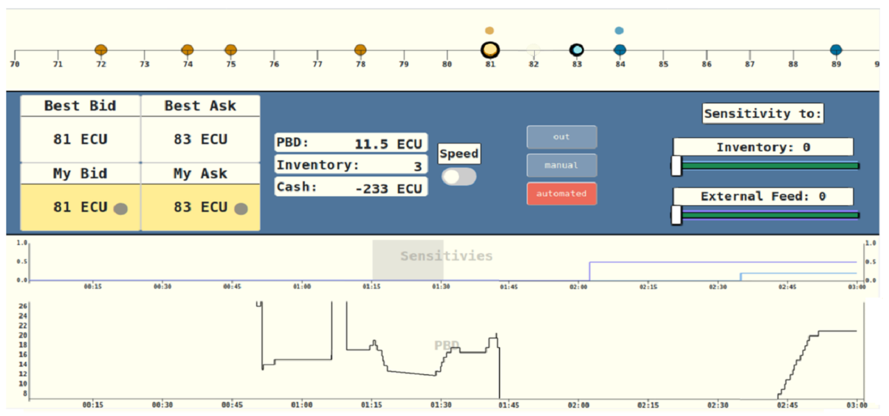
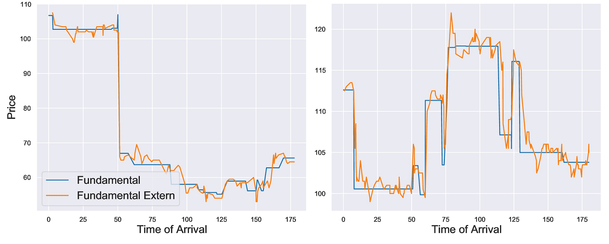

Developing a Framework for Real-Time Trading in a Laboratory Financial Market
This project deals with high-frequency trading and economic engineering means to prevent arbitrage profits in the financial market. These quasi-risk-free profits are only accessible to so-called high-frequency traders (HFTs), such as BlackRock and Vanguard. HFTs are market participants typically characterized by algorithmic trading at the speed of light without any intrinsic interest to own or owe an asset. The basic idea is that simultaneously available information that affects stock prices - think of a tweet from Elon Musk or Donald Trump - might be exploited by those who react first. This raises concerns in both academia and public policy.
Economic engineering and financial market design offer approaches to eliminate these arbitrage opportunities. However, regulators face the difficult task of identifying appropriate market interventions without having landmark data. Data is impossible to collect since it is more than unlikely that financial markets around the world will change their rules for a day just for the sake of experimentation. But indeed, this would be necessary, as the solution approaches only realize their full potential if there is a world-wide rollout. Therefore, we are testing several of the market design solution in an artificial financial market in the laboratory. This artificial market enables real-time algorithmic trading at millisecond speeds, providing a more accurate laboratory replication of the financial market mechanisms relevant to high-frequency trading than has been achieved up to this point. However, the challenges discussed in this project are that it is difficult to develop a sufficiently sophisticated software, and it is far from trivial to adequately communicate the complex financial market rules to our non-expert lab subjects. To overcome these challenges, this project discusses bottlenecks arising from the underlying software and the laboratory infrastructure, plus it analyzes data from pilot sessions to improve the subjects' level of understanding of the game.
 The image on the left shows the trading platform available to subjects during each trading period. Subjects take on the role of HFTS and have the option of staying out of the market, trading manually, or turning on a trading bot, which will trade on their behalf. This trading platform runs on participants' browsers, and the underlying software ensures serial processing of messages, an important part of the real-world financial market, but a difficult function to implement in the lab given modern multi-core processors.
 Another major advantage of the laboratory study, apart from world-wide roll-out, is the full control over price movements. This allows us to study the behavior of HFTs under both normal and stressful market conditions. Stressful market conditions can take different forms, for example, the left side of this figure shows a sudden and significant market collapse, while the right side shows a very volatile market. In fact, even a boom phase, such as the recent GameStop (GME) frenzy in early 2021, may be considered stressful for HFTs.
If you are interested in more particulars and technical details, please feel free to check out my Working Paper now available online. If you are more interested in the data analysis of the pilots and the lessons learned, please checkout GitHub.